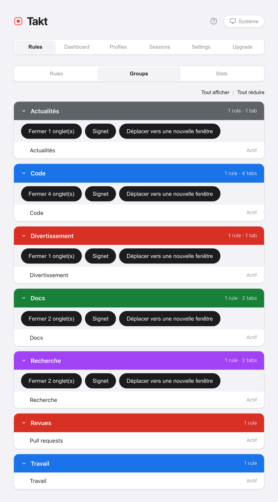

En bref : Takt réunit toutes les actions groupées sur les onglets dans un seul popup et derrière trois raccourcis par défaut. Alt+Shift+G regroupe, Alt+Shift+U dégroupe, Alt+Shift+C réduit.
- Free : Grouper, Dégrouper, Réduire, Développer, Fermer les doublons, Trier par domaine (fenêtre actuelle), le volet Tabs.
- Premium : fermer, mettre en signet ou déplacer un groupe entier, trier toutes les fenêtres, réduire les autres fenêtres, un groupe « Autres » pour les onglets restants.
- Tout s'exécute sur votre machine. Aucun compte.
Que fait chaque bouton de rangement ?
Le volet Accueil du popup contient un bloc Actions rapides. Grouper, Dégrouper, Réduire, Développer et Fermer les doublons sont grisés quand ils n'auraient aucun effet : le bloc indique donc aussi l'état de vos onglets.

| Bouton | Effet | Portée | Plan |
|---|---|---|---|
| Regrouper les onglets | Range les onglets en groupes selon vos règles, par catégorie ou avec l'IA | Toutes les fenêtres | Free |
| Dégrouper tout | Supprime tous les groupes, garde tous les onglets | Toutes les fenêtres | Free |
| Réduire tout | Replie chaque groupe sur son étiquette | Toutes les fenêtres | Free |
| Développer tout | Ouvre tous les groupes | Fenêtre actuelle | Free |
| Fermer les doublons | Ferme les URL répétées, garde la première copie | Fenêtre actuelle | Free |
| Trier par domaine | Place côte à côte les onglets d'un même site | Fenêtre actuelle (Free), toutes les fenêtres (Premium) | Free / Premium |
Regrouper les onglets suit le mode de regroupement choisi juste au-dessus. En modes Catégorie et IA, le plan Free crée jusqu'à 5 groupes par exécution. Pour en savoir plus : regrouper avec des règles et regrouper par catégorie ou par IA.
Comment ranger une fenêtre en désordre en quatre clics ?
- Fermer les doublons. Les onglets répétés de cette fenêtre se ferment. La copie la plus à gauche reste. En commençant par là, vous ne regroupez jamais les copies.
- Regrouper les onglets. Chaque onglet qui correspond rejoint son groupe.
- Trier par domaine. Dans chaque groupe, et parmi les onglets hors groupe, les onglets d'un même site s'alignent. Le tri ne fait jamais entrer ni sortir un onglet d'un groupe.
- Réduire tout. Chaque groupe se replie sur son étiquette colorée.
Fermer les doublons considère deux URL comme identiques selon votre réglage de correspondance d'URL. Par défaut, il ignore le #fragment, un www. initial, une barre oblique finale et l'ordre des paramètres de requête.
Quels sont les raccourcis clavier ?
| Raccourci | Action | Plan |
|---|---|---|
| Alt+Shift+G | Grouper tous les onglets | Free |
| Alt+Shift+U | Dégrouper tous les onglets | Free |
| Alt+Shift+C | Réduire tous les groupes | Free |
| Alt+Shift+Space | Quick Switch : rechercher n'importe quel onglet et y accéder | Premium |
| Aucun par défaut | Développer tous les groupes | Free |
Chrome permet à une extension de proposer au maximum quatre raccourcis : Développer tout est donc livré sans. Attribuez-lui une touche sur chrome://extensions/shortcuts. Vous pouvez y modifier les quatre autres aussi.
Comment voir tous les onglets ouverts dans une seule liste ?
Ouvrez le volet Tabs du popup. Il liste les onglets de toutes les fenêtres sous le nom de leur groupe, de A à Z, avec les onglets hors groupe à la fin. Tapez pour filtrer par titre ou par URL. Cliquez sur un onglet pour y accéder. Ce volet est gratuit.
Puis-je fermer, mettre en signet ou déplacer un groupe entier ?
Oui, avec Premium. Trois actions traitent un groupe comme un tout :
- Fermer. Ferme les onglets du groupe. Les onglets épinglés restent ouverts. La vue Groups vous demande d'abord de confirmer.
- Signet. Enregistre le groupe dans un dossier « Takt Bookmarks ». Les onglets restent ouverts. Nécessite la permission facultative d'accès aux signets.
- Déplacer vers une nouvelle fenêtre. Conserve le nom, la couleur et l'état replié du groupe.
Vous les trouverez dans Options → Rules → Groups, ou en faisant un clic droit sur une page puis Actions de groupe. Le menu contextuel permet aussi de déplacer le groupe vers une autre fenêtre déjà ouverte.

Les groupes peuvent-ils se replier tout seuls ?
De trois façons, toutes désactivées tant que vous ne les activez pas :
- Par règle. Cochez Auto-collapse group dans l'éditeur de règles. Un nouveau groupe créé par cette règle démarre replié, sauf s'il contient l'onglet que vous regardez. Gratuit.
- Dans la même fenêtre. Settings → Tab Groups → Auto-collapse other groups on expand. Ouvrez un groupe et les autres de cette fenêtre se replient. Gratuit.
- Entre les fenêtres. Auto-collapse groups in other windows when switching focus. Changez de fenêtre et, après 300 ms, les groupes de toutes les autres fenêtres se replient. Premium.

Que deviennent les onglets qu'aucune règle ne capte ?
Ils restent hors groupe. Avec Premium, activez Others catch-all group : Regrouper les onglets rassemble alors tous les onglets restants dans un groupe gris « Autres ». Les onglets épinglés et les pages chrome:// ne sont pas touchés. Relancer Regrouper les onglets réutilise le même groupe Autres. Cela s'applique en mode Par règles.
Ce que ces boutons ne font pas
- Trier par domaine est une action ponctuelle. Les nouveaux onglets ne restent pas triés. Le tri compare aussi les deux dernières parties du nom d'hôte :
example.co.ukest donc trié commeco.uk. - Fermer les doublons reste dans une seule fenêtre. Une copie ouverte dans une autre fenêtre n'est pas touchée.
- Les actions de groupe se trouvent dans le menu de la page. Faites un clic droit sur la page, pas sur la barre d'onglets.
- Regrouper les onglets a besoin d'un critère. En mode Par règles, les onglets qu'aucune règle ne capte restent en vrac, sauf si Autres est activé.
Deux clics entre des onglets en vrac et une rangée de groupes bien rangée.
Ajouter Takt à Chrome, gratuitementQuestions fréquentes
Quels sont les raccourcis clavier par défaut de Takt ?
Alt+Shift+G regroupe, Alt+Shift+U dégroupe, Alt+Shift+C réduit, et Alt+Shift+Space ouvre Quick Switch (Premium). Développer tout n'a pas de touche par défaut. Attribuez-en une sur chrome://extensions/shortcuts.
Quel onglet Fermer les doublons conserve-t-il ?
La première copie dans l'ordre de la barre d'onglets, en partant de la gauche. Les copies suivantes de la fenêtre actuelle se ferment. Votre réglage de correspondance d'URL détermine ce qui compte comme une même URL ; par défaut, le #fragment est ignoré.
Les boutons de rangement sont-ils gratuits ?
Grouper, Dégrouper, Réduire, Développer, Fermer les doublons, le volet Tabs et la réduction automatique dans la même fenêtre sont gratuits. Trier par domaine est gratuit pour la fenêtre actuelle. Premium (3 $/mois ou 30 $/an) ajoute le tri de toutes les fenêtres, les actions de groupe, la réduction automatique entre fenêtres et le groupe Autres.
Puis-je fermer un groupe d'onglets entier d'un coup ?
Avec Premium, oui : depuis la vue Groups des options de Takt, ou depuis Actions de groupe dans le menu contextuel de la page. La fermeture ignore les onglets épinglés, et la vue Groups vous demande d'abord de confirmer.